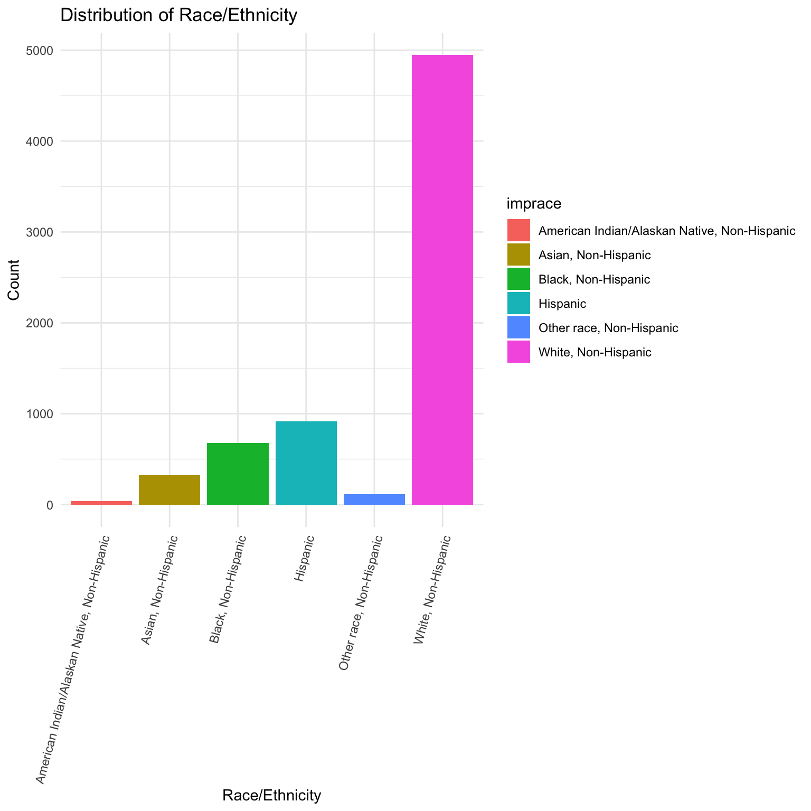

Project Report
Motivation and Primary Objectives
Food access is a critical determinant of health outcomes and a driver of systemic health inequalities. In wealth-deprived communities, limited access to affordable and nutritious food often results in higher incidences of diet-related illnesses, such as Type II diabetes and obesity. This project focuses on identifying food deserts in NYC and analyzing food access patterns to better understand their health and socioeconomic impacts. While NYC is the primary focus for mapping food deserts, statewide regression analysis helps contextualize NYC-specific trends by providing a broader perspective on food access and its relationship to health outcomes across diverse regions in New York State. This dual-level approach aims to provide actionable insights into addressing food access disparities both locally and at the state level.
The food desert map provides a detailed, localized view of NYC, analyzing population density and retail store access at the census tract level within the city. This map is valuable for identifying specific underserved areas within NYC. The regression analysis, on the other hand, uses data from the entire state of New York, which includes urban, suburban, and rural areas. It provides a broader perspective, capturing statewide trends in food access, retail distribution, and other socio-economic factors.
The NYC map aims to understand urban-specific challenges, such as access in densely populated boroughs. The regression model attempts to identify statewide patterns and predictors of food deserts, considering the diversity of urban and rural contexts across the state.
Initial Questions
Our initial questions are:
- Are there any food deserts in NYC?
- What socioeconomic factors impact food access? - How does food access
affect nutrition and health outcomes?
After conducting exploratory analysis and gaining a better
understanding of the datasets, we refined our questions as
follows:
- Where are food deserts located in NYC, specifically at a more granular
level?
- How does the spatial proximity to retail stores influence food access
and availability for different communities?
- What
Data Sources and Cleaning
NYC 2020 Census Tract Dataset
population_data =
read_excel("nyc2020_census_blocks.xlsx") |>
slice(-c(1:6)) |>
mutate(
borough_code = as.numeric(substr(GeoID, 1, 1)),
tract_number = substr(GeoID, 2, 7),
fips_county = case_when(
borough_code == 1 ~ "061",
borough_code == 2 ~ "005",
borough_code == 3 ~ "047",
borough_code == 4 ~ "081",
borough_code == 5 ~ "085"
),
geoid = paste0("36", fips_county, tract_number)
) |>
group_by(geoid) |>
summarize(total_population = sum(Pop1, na.rm = TRUE)) Exported Shapefile from NYC
Open Data. This dataset includes the 2020 Census Tracts from the US
Census for New York City. The boundary files are derived from the US
Census Bureau’s TIGER data products and have been geographically
modified to align with the New York City base map. The Shapefile was
imported using st_read() from the sf package.
Population data, aggregated at the census tract level, was joined to the
shapefile using the common geoid identifier. Census tracts
were classified into population bins based on total population for
improved visualization.
NYC 2020 Decennial Census Data
nyc_tracts =
st_read(
"2020 Census Tracts/geo_export_ae979acf-b46a-42af-a79f-874d7b450fc8.shp",
quiet = TRUE)|>
left_join(population_data, by = "geoid") |>
mutate(
pop_bins = cut(
total_population,
breaks = c(0, 1001, 5001, 10001, 15001, Inf),
labels = c("≤ 1,000", "1,001 - 5,000", "5,001 - 10,000", "10,001 - 15,000", "> 15,000"),
include.lowest = TRUE
)
) |>
select(boroname, total_population, geometry, pop_bins)Downloaded the Excel file from 2020
Census - DCP provided by the NYC Department of City Planning. This
dataset includes basic demographic and housing characteristics, such as
total population, race/ethnicity, age, housing tenure, and household
composition for NYC’s census blocks.The dataset was imported using
read_excel() and the first six rows, which contained
summary population information for the five counties and NYC as a whole,
were removed. A new variable, geoid, was created by
combining borough codes and tract numbers to ensure compatibility with
the NYC census tract dataset. Total population was aggregated across
unique geoid values to calculate the total population for
each census tract. The cleaned population dataset was then merged with
the NYC census tract dataset using the geoid variable. We
retained only the variables essential for our analysis:
boroname,
total_population,
geometry, and
pop_bins.
Retail Store Dataset
retail_stores =
read_csv("Retail_Food_Stores.csv") |>
janitor::clean_names() |>
filter(county %in% c("BRONX", "KINGS", "NEW YORK", "RICHMOND", "QUEENS"),
!str_detect(establishment_type, "B|C|D")) |>
mutate(county = recode(county,
"BRONX" = "Bronx",
"KINGS" = "Brooklyn",
"NEW YORK" = "Manhattan",
"RICHMOND" = "Staten Island",
"QUEENS" = "Queens"
)) |>
mutate(geometry = st_as_sfc(georeference)) |>
st_as_sf() |>
st_set_crs(4326)
retail_stores =
retail_stores |>
filter(square_footage >= 2000) |>
mutate(
category = case_when(
square_footage < 5000 ~ "Small",
square_footage <= 9000 ~ "Medium",
square_footage > 9000 ~ "Large"
)
)|>
select(county, geometry, category)Exported CSV file from Open
Data NY. This dataset provides a listing of all retail food stores
licensed by the Department of Agriculture and Markets. The dataset
includes variables such as store location, type, and square footage. The
dataset was imported using read_csv() and column names were
cleaned using the janitor::clean_names() function. Only
relevant counties (Bronx, Kings, New York, Richmond, and Queens) were
selected for the analysis. Establishment types were filtered to include
only type B (Bakery), C (Food Manufacturer),
and D (Food Warehouse). County names were recoded for
consistency with other datasets.Stores with square footage below 2,000
sqft were excluded due to insufficent nutrition providance
consideration.Stores were categorized into the following size
groups:
- Small: Less than 5,000 sqft
- Medium: Between 5,000 and 9,000 sqft
- Large: Greater than 9,000 sqft
We retained only the variables essential for our analysis:
county,
geometry, and
category.
covered_df =
retail_stores |>
st_transform(crs = 2263) |>
mutate(
coverage_radius = case_when(
category == "Small" ~ 5280*0.15,
category == "Medium" ~ 5280*0.25,
category == "Large" ~ 5280*0.35
)
) |>
mutate(geometry = st_buffer(geometry, dist = coverage_radius))To visualize the coverage of retail stores by adding coverage zones
based on store size. The geometry was transform the CRS to
EPSG:2263 for accurate distance-based calculations.Coverage
zones were created around store locations using
st_buffer(). The coverage radii were categorized into the
following size groups:
- Small: 0.15 miles (792 ft)
- Medium: 0.25 miles (1,320 ft)
- Large: 0.35 miles (1,848 ft)
Behavioral Risk Factor Surveillance System 2022 Dataset
brfss_22 = read_csv("NYSDOH_BRFSS_Survey_Data_2022.csv")|>
janitor::clean_names()
cleaned_df =
brfss_22 |>
filter(complete.cases(imprace, educag, incomg1, strsmeal_sa, genhlth, diabete4, ment14d, phys14d))|>
select(imprace, educag, incomg1, strsmeal_sa, genhlth, diabete4, ment14d, phys14d)
cleaned_df =
cleaned_df |>
mutate(
income = case_when(
incomg1 %in% c("Less than $15,000", "$25,000 to < $35,000", "$35,000 to < $50,000") ~"<50,000",
incomg1 == "$50,000 to < $100,000" ~ "50,000 ~ 100,000",
incomg1 %in% c ("$100,000 to < $200,000" , "$200,000 or more") ~ ">100,000",
TRUE ~ NA_character_),
education = case_when(
educag == "Did not graduate High School" ~ "Less than high school",
educag == "Graduated High School" ~ "High school or GED",
educag == "Attended College or Technical School" ~ "Some post-high school",
educag == "Graduated from College or Technical School" ~ "College graduate"
),
food_insecure = case_when(
strsmeal_sa %in% c("Rarely","Sometimes","Usually", "Always") ~ 1,
strsmeal_sa == "Never" ~ 0),
health = case_when(
genhlth %in% c("Good", "Very good", "Excellent") ~ 1,
genhlth %in% c("Fair", "Poor") ~ 0),
physical_health = case_when(
phys14d %in% c("Zero days when physical health not good") ~ 0,
phys14d %in% c("1-13 days when physical health not good", "14+ days when physical health not good") ~ 1),
mental_health = case_when(
ment14d %in% c("Zero days when mental health not good") ~ 0,
ment14d %in% c("1-13 days when mental health not good", "14+ days when physical health not good") ~ 1)
)|>
filter(!is.na(income), !is.na(education), !is.na(physical_health), !is.na(mental_health))|>
select(-incomg1, -educag, -strsmeal_sa, -genhlth, -phys14d, -ment14d)Downlaoded the csv file from BRSFF
2022. It is used for regression analysis. It provides monitors
modifiable risk behaviors and other factors contributing to the leading
causes of morbidity and mortality in the population. This dataset was
imported using read_csv() and cleans the variable names for
easier handling using janitor::clean_names(), and then
processes the dataset to focus on relevant variables
(imprace, educag, incomg1,
strsmeal_sa, genhlth, phys14d,
and ment14d). It filters out rows with missing values in
these variables and recodes the income and education variables into
simplified categories. New categorical variables are
income, education. Additionally, we created
two binary variable,food_insecure based on responses to
food insecurity questions, and health,
physcial_health, and mental_healthbased on
responses of rated health. Finally, the cleaned dataset excludes the
original incomg1, educag, strsmeal_sa, and genhlth, phys14d and -ment14d
variables and keeps only the relevant and recoded columns.
Identifying Food Desert
Food deserts are areas with limited access to affordable and nutritious food options, particularly fresh fruits and vegetables. To identify food deserts, we examined the distribution of retail stores across New York City. This analysis combines population density data with the spatial distribution of retail stores. To enhance visualization and clarity, the analysis is divided into two geographic regions: Manhattan + Bronx and Brooklyn + Queens + Staten Island.
NYC Population Distribution
nyc_tracts |>
ggplot() +
annotation_map_tile(zoom = 12, type = "cartolight") +
geom_sf(aes(fill = pop_bins), color = "white", lwd = 0.2) +
scale_fill_manual(
values = c("#fee5d9", "#fcbba1", "#fc9272", "#fb6a4a", "#de2d26"),
name = "Population by Census Tract"
) +
labs(title = "Population Distribution in New York City") +
theme_minimal() +
theme(
legend.position = c(0.05, 0.9),
legend.justification = c(0, 1),
legend.background = element_rect(fill = "white", color = "black")
)The map visualizes the population distribution across New York City by census tract, derived from the 2020 Census data. The tracts are color-coded to reflect population density, categorized into five population ranges: ≤ 1,000; 1,001–5,000; 5,001–10,000; 10,001–15,000; > 15,000.
Manhattan exhibits densely populated tracts, particularly in the central and lower regions, which are major commercial and residential hubs. Parts of Brooklyn and Queens also show significant population concentrations, particularly in areas near transportation centers and urban neighborhoods. Staten Island generally has lower population density, especially in its southern and central tracts, reflecting its more suburban nature. Peripheral regions in Queens and the Bronx have relatively sparse populations compared to urban centers.
Identifying Food Desert
Food deserts are areas with limited access to affordable and nutritious food options, particularly fresh fruits and vegetables. To identify food deserts, we examined the distribution of retail stores across New York City. This analysis combines population density data with the spatial distribution of retail stores. To enhance visualization and clarity, the analysis is divided into two geographic regions: Manhattan + Bronx and Brooklyn + Queens + Staten Island.
Manhattan and Bronx
Retail store dirtributions
nyc_tracts |>
filter(boroname %in% c("Manhattan", "Bronx")) |>
ggplot() +
annotation_map_tile(zoom = 12, type = "cartolight") +
geom_sf(aes(fill = pop_bins), color = "white", lwd = 0.2) +
geom_sf(data = retail_stores |>
filter(county %in% c("Manhattan", "Bronx")), color = "darkblue", size = 2) +
scale_fill_manual(
values = c("#fee5d9", "#fcbba1", "#fc9272", "#fb6a4a", "#de2d26"),
name = "Population by Census Tract"
) +
labs(
title = "Population Distribution and Retail Store Locations",
subtitle = "Manhattan and Bronx"
) +
theme_minimal() +
theme(
legend.position = c(0.05, 0.9),
legend.justification = c(0, 1),
legend.background = element_rect(fill = "white", color = "black"),
plot.title = element_text(size=17.5, hjust=0.5),
plot.subtitle = element_text(hjust=.5)
)
Retail stores are heavily concentrated in central and lower Manhattan, which aligns with areas of higher population density and commercial activity. This clustering likely reflects the demand for retail services in densely populated and economically vibrant neighborhoods. The Bronx shows a more evenly distributed pattern of retail stores. However, northern and central Bronx census tracts with higher populations have fewer stores, indicating possible underserved areas.
The combination of population density and retail store distribution in this visualization provides insights into potential gaps in food accessibility. Areas with sparse retail store coverage and relatively high populations might be indicative of underserved communities, highlighting regions where interventions or additional resources may be required to improve access to nutritious food.
Add Coverage Zones
nyc_tracts |>
filter(boroname %in% c("Manhattan", "Bronx")) |>
ggplot() +
annotation_map_tile(zoom = 12, type = "cartolight") +
geom_sf(aes(fill = pop_bins),
color = "white", lwd = 0.2
) +
geom_sf(
data = covered_df |> filter(county %in% c("Manhattan", "Bronx")),
aes(fill = category),
alpha = 0.4,
color = NA
) +
geom_sf(
data = retail_stores |> filter(county %in% c("Manhattan", "Bronx")),
aes(color = category),
alpha = 0.6,
size = 1.5
) +
scale_fill_manual(
values = c(
"Small" = "yellow", "Medium" = "green", "Large" = "blue",
"≤ 1,000" = "#fee5d9", "1,001 - 5,000" = "#fcbba1",
"5,001 - 10,000" = "#fc9272", "10,000 - 15,000" = "#fb6a4a",
"> 15,000" = "#de2d26"
),
breaks = c("Small", "Medium", "Large"),
name = "Store Category"
) +
scale_color_manual(
values = c("Small" = "yellow", "Medium" = "green", "Large" = "blue"),
guide = "none"
) +
labs(
title = "Population Distribution and Retail Store Coverage",
subtitle = "Manhattan and Bronx"
) +
theme_minimal() +
theme(
legend.position = c(0.05, 0.9),
legend.justification = c(0, 1),
legend.background = element_rect(fill = "white", color = "black"),
plot.title = element_text(size=17.5, hjust=0.5),
plot.subtitle = element_text(hjust=.5)
)
This graph shows the retail store distribution and their respective
coverage zones in Manhattan and the Bronx. The store categories are
classified by square footage:
- Small stores: Represented in yellow with a coverage radius of 0.15
miles.
- Medium stores: Represented in green with a coverage radius of 0.25
miles.
- Large stores: Represented in blue with a coverage radius of 0.35
miles.
A dense clustering of retail stores is evident in central and lower Manhattan. Overlapping coverage zones indicate high accessibility, suggesting these areas are well-served by retail options. Retail stores are less densely distributed, especially in the upper-left corner of the Bronx, where coverage zones are sparse or absent. This highlights potential food desert areas with limited access to retail stores.
Brooklyn, Queens, and Staten Island
Retail Store Dirtributions
nyc_tracts |>
filter(boroname %in% c("Brooklyn", "Queens", "Staten Island")) |>
ggplot() +
annotation_map_tile(zoom = 12, type = "cartolight") +
geom_sf(aes(fill = pop_bins), color = "white", lwd = 0.2) +
geom_sf(data = retail_stores |>
filter(county %in% c("Brooklyn", "Queens", "Staten Island")), color = "darkblue", size = 2) +
scale_fill_manual(
values = c("#fee5d9", "#fcbba1", "#fc9272", "#fb6a4a", "#de2d26"),
name = "Population by Census Tract"
) +
labs(
title = "Population Distribution and Retail Store Locations",
subtitle = "Brooklyn, Queens, and Staten Island"
) +
theme_minimal() +
theme(
legend.position = c(0.05, 0.9),
legend.justification = c(0, 1),
legend.background = element_rect(fill = "white", color = "black")
)
Brooklyn has a high density of retail stores, particularly in areas of moderate to high population density. This reflects a pattern of urban development and commercial activity aligning with residential areas. Queens also displays significant coverage of retail stores, though there are noticeable gaps in the central and eastern parts of the borough. These gaps might indicate areas of potential food deserts.Staten Island has retail stores distributed relatively loosely, and the southernmost tracts with lower population density have limited retail store presence.
These findings suggest that while Brooklyn and parts of Queens enjoy relatively good retail store coverage, some areas, particularly in Staten Island and parts of Queens, may lack sufficient access to stores that provide fresh and nutritious food options.
Add Coverage Zones
nyc_tracts |>
filter(boroname %in% c("Brooklyn", "Queens", "Staten Island")) |>
ggplot() +
annotation_map_tile(zoom = 12, type = "cartolight") +
geom_sf(aes(fill = pop_bins),
color = "white", lwd = 0.2
) +
geom_sf(
data = covered_df |>
filter(county %in% c("Brooklyn", "Queens", "Staten Island")),
aes(fill = category),
alpha = 0.4,
color = NA
) +
geom_sf(
data = retail_stores |>
filter(county %in% c("Brooklyn", "Queens", "Staten Island")),
aes(color = category),
alpha = 0.6,
size = 1.5
) +
scale_fill_manual(
values = c(
"Small" = "yellow", "Medium" = "green", "Large" = "blue",
"≤ 1,000" = "#fee5d9", "1,001 - 5,000" = "#fcbba1",
"5,001 - 10,000" = "#fc9272", "10,000 - 15,000" = "#fb6a4a",
"> 15,000" = "#de2d26"
),
breaks = c("Small", "Medium", "Large"),
name = "Store Category"
) +
scale_color_manual(
values = c("Small" = "yellow", "Medium" = "green", "Large" = "blue"),
guide = "none"
) +
labs(
title = "Population and Retail Store Coverage",
subtitle = "Brooklyn, Queens, and Staten Island"
) +
theme_minimal() +
theme(
legend.position = c(0.05, 0.9),
legend.justification = c(0, 1),
legend.background = element_rect(fill = "white", color = "black"),
plot.title = element_text(size=17.5, hjust=0.5),
plot.subtitle = element_text(hjust=.5)
)
Same as above, the retail stores are categorized into Small, Medium, and Large, represented by yellow, green, and blue buffer zones, respectively.
For Brooklyn, the coverage zones overlap significantly in densely populated areas, ensuring better coverage for residents. However, small gaps remain in the eastern parts. Queens has a mix of small and medium store buffers, indicating for moderate coverage. Sparse large store buffers in some areas leave room for improvement, especially in central and eastern Queens. For Staten Island, the central and southernmost tracts have very few store buffers, indicating limited accessibility to nutritious food options for residents in these regions. This combined map highlights potential food deserts and areas requiring improved access to retail stores offering fresh and nutritious food.
Regression Analysis
In the regression analysis section, we explore the association
between several socioeconomic factors, income,
education, and race and
food insecure separately, and finally examine the
association between food insecure and
general health to emphasize how limited or uncertain access
to adequate food impacts individuals’ physical, mental, and overall
well-being. Food insecurity has been linked to poorer self-rated health,
increased prevalence of chronic diseases, and higher stress levels,
which can exacerbate health inequalities. Analyzing this relationship
helps identify vulnerable populations and inform public health
interventions aimed at improving food access and promoting better health
outcomes.
Key Socioeconomic Factors Distribution
ggplot(data = cleaned_df, aes(x = imprace, fill = imprace))+
geom_bar() +
labs(
title = "Distribution of Race/Ethnicity",
x = "Race/Ethnicity",
y = "Count"
) +
theme_minimal() +
theme(axis.text.x = element_text(angle = 45, hjust = 1))
This bar graph illustrates the distribution of race/ethnicity in the dataset. The categories include American Indian/Alaskan Native, Asian, Black, Hispanic, Other Race, and White, all specified as Non-Hispanic except for the Hispanic group. Among these groups, White, Non-Hispanic individuals dominate, with the highest count exceeding 6,000. The second most prevalent group is Hispanic, followed by Black, Non-Hispanic, while Other Race, Non-Hispanic, and Asian, Non-Hispanic, show significantly smaller counts. The American Indian/Alaskan Native, Non-Hispanic category represents the smallest group.
ggplot(cleaned_df, aes(x = "", fill = education)) +
geom_bar(width = 1, stat = "count") +
coord_polar(theta = "y") +
labs(
title = "Distribution of Education Levels",
fill = "Education Level"
) +
theme_void() +
theme(legend.position = "right")
This pie chart shows the distribution of education levels within a dataset. The largest portion of the chart is represented by college graduates, shown in red, indicating that a significant proportion of individuals have completed higher education. The second-largest category, represented in purple, corresponds to individuals with some post-high school education. High school graduates or those with a GED, shown in green, form a smaller segment, while the smallest portion of the chart, in teal, represents individuals with less than a high school education.
ggplot(cleaned_df, aes(x = as.factor(food_insecure), fill = as.factor(food_insecure))) +
geom_bar() +
scale_fill_manual(values = c("0" = "lightblue", "1" = "pink"), labels = c("Not Food Insecure", "Food Insecure")) +
labs(
title = "Distribution of Food Insecurity",
x = "Food Insecurity",
y = "Count",
fill = "Status"
) +
theme_minimal()
This bar graph presents the distribution of food insecurity status among individuals in the dataset. The largest group, represented in light blue, comprises individuals who are not food insecure, with a count exceeding 4,000. The second-largest group, shown in pink, represents individuals who are food insecure, numbering slightly over 2,000. A very small proportion, represented in gray, corresponds to missing data (NA) for food insecurity status.
Is income associated with food insecure?
logit_income =
glm(formula = food_insecure ~ income, data = cleaned_df, family = binomial)
exp_income = exp(cbind(OR=coef(logit_income),confint(logit_income)))
knitr::kable(exp_income)| OR | 2.5 % | 97.5 % | |
|---|---|---|---|
| (Intercept) | 0.9625963 | 0.8772272 | 1.0562152 |
| income>100,000 | 0.1755147 | 0.1502525 | 0.2045577 |
| income50,000 ~ 100,000 | 0.3792408 | 0.3299022 | 0.4355688 |
Intercept: The odds ratio for the intercept (1.171) represents the baseline odds of being food insecure when income is less than 50,000.
OR:
Income > 100,000: The odds ratio (0.166) indicates that individuals with an income greater than $100,000 have 83.4% lower odds of being food insecure compared to the income group less than 50,000.
Income 50,000–100,000: The odds ratio (0.349) indicates that individuals with an income between $50,000 and 100,000 have 65.1% lower odds of being food insecure compared to the income group less than 50,000.
Statistical significance: confidence intervals of OR of both predictor levels exclude 1, indicating that they are statistically associated with food insecure.
Is race associated with food insecure?
logit_race =
glm(food_insecure ~ imprace, data = cleaned_df, family = binomial)
exp_race = exp(cbind(OR=coef(logit_race),confint(logit_race)))
knitr::kable(exp_race)| OR | 2.5 % | 97.5 % | |
|---|---|---|---|
| (Intercept) | 1.1538462 | 0.5479650 | 2.4622389 |
| impraceAsian, Non-Hispanic | 0.3791667 | 0.1704651 | 0.8326280 |
| impraceBlack, Non-Hispanic | 0.6137705 | 0.2821394 | 1.3182904 |
| impraceHispanic | 1.0067340 | 0.4646362 | 2.1536196 |
| impraceOther race, Non-Hispanic | 0.4333333 | 0.1782453 | 1.0366315 |
| impraceWhite, Non-Hispanic | 0.2686804 | 0.1254936 | 0.5676891 |
Intercept: The odds ratio for the intercept (1.6) represents the odds of being food insecure for the reference group (American Indian/Alaskan Native).
OR:
Asian, Non-Hispanic: The odds ratio (0.318) indicates that Asian, Non-Hispanic individuals have 68.2% lower odds of being food insecure compared to American Indians.
Black, Non-Hispanic: The odds ratio (0.528) suggests that Black, Non-Hispanic individuals have 47.2% lower odds of being food insecure compared to American Indians.
Hispanic: The odds ratio (0.832) implies that Hispanic individuals have 16.8% lower odds of being food insecure compared to American Indians.
Other Race, Non-Hispanic: The odds ratio (0.426) indicates that individuals of Other Race, Non-Hispanic have 57.4% lower odds of being food insecure compared to American Indians.
White, Non-Hispanic: The odds ratio (0.230) suggests that White, Non-Hispanic individuals have 77% lower odds of being food insecure compared to American Indians.
Statistical significance: confidence intervals of OR of all predictor levels except Black and Hispanic exclude 1, indicating that these predictor levels are statistically significant.
Is education associated with food insecure?
logit_edu =
glm(food_insecure ~ education, data = cleaned_df, family = binomial)
exp_edu = exp(cbind(OR=coef(logit_edu),confint(logit_edu)))
knitr::kable(exp_edu)| OR | 2.5 % | 97.5 % | |
|---|---|---|---|
| (Intercept) | 0.264363 | 0.242041 | 0.2883149 |
| educationHigh school or GED | 2.400981 | 2.066532 | 2.7889341 |
| educationLess than high school | 5.582203 | 4.289584 | 7.2915963 |
| educationSome post-high school | 2.048004 | 1.772791 | 2.3652860 |
Intercept: The odds ratio for the intercept (0.309) represents the odds of being food insecure for individuals in the reference group (College graduates).
OR:
High School or GED: The odds ratio (2.444) indicates that individuals with a high school diploma or GED have 144.4% higher odds of being food insecure compared to college graduates.
Less than High School: The odds ratio (5.241) suggests that individuals with less than a high school education have 424.1% higher odds of being food insecure compared to college graduates.
Some Post-High School: The odds ratio (2.119) indicates that individuals with some post-high school education have 111.9% higher odds of being food insecure compared to college graduates.
Statistical significance: confidence intervals of OR of all three predictor levels exclude 1, making these results statistically significant.
Are race, education, and income associated with food insecure?
logit_all =
glm(food_insecure ~ education + income + imprace, data = cleaned_df, family = binomial)
exp_all = exp(cbind(OR=coef(logit_all),confint(logit_all)))
knitr::kable(exp_all)| OR | 2.5 % | 97.5 % | |
|---|---|---|---|
| (Intercept) | 1.3061957 | 0.5915117 | 2.9363848 |
| educationHigh school or GED | 1.3776536 | 1.1658961 | 1.6265583 |
| educationLess than high school | 1.8150326 | 1.3504507 | 2.4438710 |
| educationSome post-high school | 1.4617004 | 1.2512580 | 1.7063711 |
| income>100,000 | 0.2451549 | 0.2066958 | 0.2902541 |
| income50,000 ~ 100,000 | 0.4789864 | 0.4131403 | 0.5550137 |
| impraceAsian, Non-Hispanic | 0.5937271 | 0.2546111 | 1.3620134 |
| impraceBlack, Non-Hispanic | 0.7509072 | 0.3297541 | 1.6810226 |
| impraceHispanic | 1.0624049 | 0.4682561 | 2.3688189 |
| impraceOther race, Non-Hispanic | 0.5913135 | 0.2311089 | 1.4850650 |
| impraceWhite, Non-Hispanic | 0.4116274 | 0.1837100 | 0.9064304 |
Statistical Significant Predictors:
Education:
- Individuals with a high school diploma or GED have 40.1% higher odds of being food insecure compared to college graduates.
- Individuals with less than a high school education have 67.1% higher odds of being food insecure compared to college graduates.
- Individuals with some post-high school education have 49.1% higher odds of being food insecure compared to college graduates.
Income:
- Individuals earning over 100,000 have 77.2% lower odds of being food insecure compared to those earning ≤ $50,000.
- Individuals earning between $50,000 and $100,000 have 56.3% lower odds of being food insecure compared to those earning ≤ $50,000.
Race/Ethnicity:
- White, Non-Hispanic individuals have 61.4% lower odds of being food insecure compared to American Indians.
Summary: Education and income levels show significant associations with food insecurity, with lower education and income levels increasing odds of food insecurity.Among racial/ethnic groups, only White, Non-Hispanic individuals show significantly lower odds of food insecurity compared to American Indians.
Is food insecure associated with general health?
logit_health =
glm(health ~ food_insecure, data = cleaned_df, family = binomial)
exp_health = exp(cbind(OR=coef(logit_health),confint(logit_health)))
knitr::kable(exp_health)| OR | 2.5 % | 97.5 % | |
|---|---|---|---|
| (Intercept) | 10.8694362 | 9.738412 | 12.1738224 |
| food_insecure | 0.4674195 | 0.394007 | 0.5548997 |
OR:
- Individuals who are food insecure have 73.2% lower odds of reporting “Poor” health compared to “Fair” health when compared to non-food insecure individuals.
- Food-insecure individuals have 67.4% lower odds of reporting “Good” health compared to “Fair” health than non-food insecure individuals.
- Food-insecure individuals have 33.4% lower odds of reporting “Very Good” health compared to “Fair” health than non-food insecure individuals.
- Food-insecure individuals have 59.6% higher odds of reporting “Excellent” health compared to “Fair” health than non-food insecure individuals.
Statistical significance: confidence intervals of OR of “Good”, “Very Good”, and “Excellent” health group exclude 1, indicating that these predictor levels are statistically significant.
Discussion
Food Desert
Based on the visualizations and observations, we identify significant disparities in the availability of retail food stores across New York City’s boroughs. The analysis highlights areas with limited access to nutritious food options, also known as food deserts, particularly in regions with sparse retail store coverage.
Population Distribution
Population density decreases as you move away from Manhattan and central parts of Brooklyn and Queens. Staten Island’s tracts show the least density among the boroughs. This distribution highlights key urban planning and infrastructure challenges, such as addressing disparities in population density and ensuring equitable access to resources and services in low-density areas.
Retail Food Store Distribution
Manhattan shows dense retail store coverage in central and lower regions but limited access in northern tracts. The Bronx, particularly its upper-left corner, has sparse coverage despite moderate population density. Brooklyn and Queens demonstrate a mix of small and medium store buffers, but gaps exist in eastern Brooklyn and Queens. Staten Island has the most limited coverage, with southern tracts particularly underserved.
The analysis underscores the need for tailored policies and
interventions to address food deserts, focusing on areas with:
- High population density but sparse retail store coverage (e.g., parts
of the Bronx, eastern Queens, and southern Staten Island).
- Limited presence of medium and large retail stores, which are more
likely to offer fresh and nutritious food options.
Efforts could include incentivizing grocery stores to open in underserved areas, enhancing transportation options to food hubs, and supporting local farmers’ markets to improve accessibility to nutritious food in food deserts. These actions could help bridge the food access gap and promote equitable food security across New York City.
Food Insecure
The regression analysis highlights the significant associations between food insecurity and key predictors, including income, race/ethnicity, education, and self-rated health. Results indicate that higher income levels are associated with substantially lower odds of food insecurity. Individuals earning over $100,000 have 83.4% lower odds, and those earning between $50,000 and $100,000 have 65.1% lower odds of food insecurity compared to those earning less than $50,000. Racial and ethnic disparities in food insecurity are evident. White, Non-Hispanic individuals have the lowest odds of food insecurity (77% lower), followed by Asian, Non-Hispanic individuals (68.2% lower), and Other Race, Non-Hispanic individuals (57.4% lower) compared to American Indians. Associations between levels of Black, Non-Hispanic and Hispanic individuals and food insecure are not significant. Lower education levels are strongly associated with higher odds of food insecurity. Individuals with less than a high school education have 424.1% higher odds, those with a high school diploma or GED have 144.4% higher odds, and those with some post-high school education have 111.9% higher odds of being food insecure compared to college graduates. The last regression emphasizes that food insecurity significantly affects perceived health levels. The result that individuals with food insecure have a higher odds ratio to report “Excellent” health compared to “Fair” health is very weird. The result may be influenced by individuals’ perceptions, cultural norms, and personal experiences. Furthermore, individuals who recently are experiencing food insecurity might still maintain good physical health but are at the early stages of economic or food-related struggles, leading them to perceive their health as excellent.
Limitations
The limitation for regression analysis is that the regression to explore the association between food insecure and general health does not include any confounding variables. As we examined before this regression, we found that income, education, and race can influence individuals’ perspectives on food insecure. We may explore more socioeconomic factors and control them in the regression to better determine whether food insecurity independently contributes to differences in health outcomes.